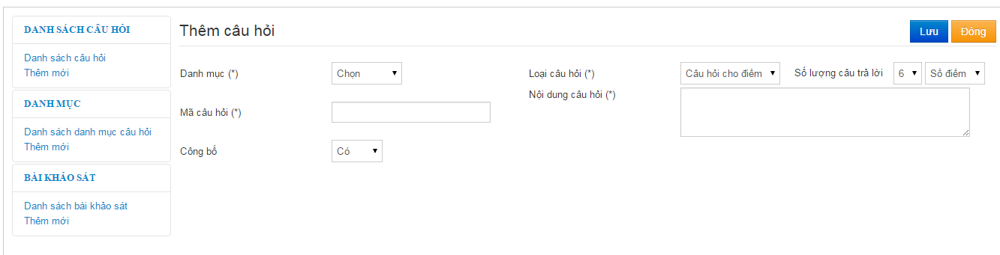

o Vào F.Tiện ích -> 3.Khảo sát
o Trong giao diện danh sách câu hỏi -> Nhấn nút Thêm mới

o Danh mục: Danh mục của câu hỏi
o Loại câu hỏi:
§ Yes-No là loại câu hỏi trắc nghiệm có 2 đáp án
§ Lựa chọn một: loại câu hỏi theo kiểu trắc nghiêm có nhiều đáp án
§ Câu hỏi cho điểm: Có 2 kiểu hiển thị câu trả lời:
· Số điểm
· Dấu sao
o Chọn số lượng câu trả lời
o Nhập các phương án trả lời trắc nghiệm
o Nhấn Lưu để hoàn tất
o Vào F.Tiện ích -> 3.Khảo sát
o Chọn câu hỏi cần sửa -> Nhấn nút sửa để vào giao diện sửa câu hỏi
o Cập nhật thông tin câu hỏi giống như phần thêm mới câu hỏi
o Nhấn nút Lưu để hoàn tất
o Vào F.Tiện ích -> 3.Khảo sát
o Chọn câu hỏi cần Xóa -> Nhấn nút xóa để câu hỏi
o Vào F.Tiện ích -> 3.Khảo sát -> Chọn Bài khảo sát ở menu bên trái -> Danh sách bài khảo sát
o Nhấn nút thêm mới để vào giao diện thêm bài khảo sát
o Nhập mã bài khảo sát
o Nhập tiêu đề bài khảo sát
o Nhấn nút để thêm câu hỏi nút  để bỏ câu hỏi
để bỏ câu hỏi
o Nhấn nút lưu để hoàn tất
o Vào F.Tiện ích -> 3.Khảo sát -> Chọn Bài khảo sát ở menu bên trái -> Danh sách bài khảo sát
o Chọn bài khảo sát cần sửa -> Nhấn nút sửa để vào giao diện bài khảo sát
o Cập nhật thông tin bài khảo sát giống như phần thêm mới bài khảo sát
o Nhấn nút Lưu để hoàn tất
o Vào F.Tiện ích -> 3.Khảo sát -> Chọn Bài khảo sát ở menu bên trái -> Danh sách bài khảo sát
o Chọn bài khảo sát cần xóa -> Nhấn nút xóa để xóa bài khảo sát